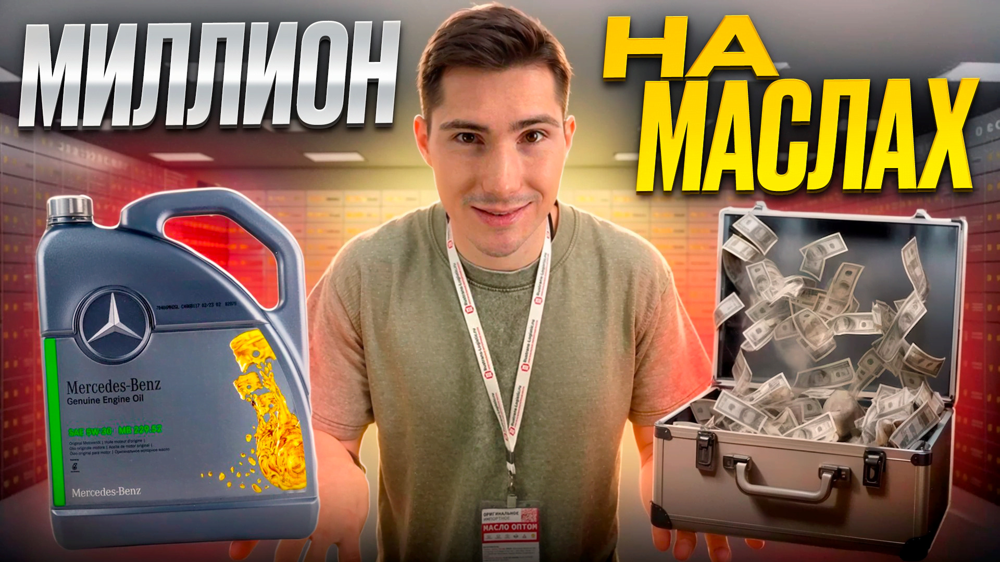
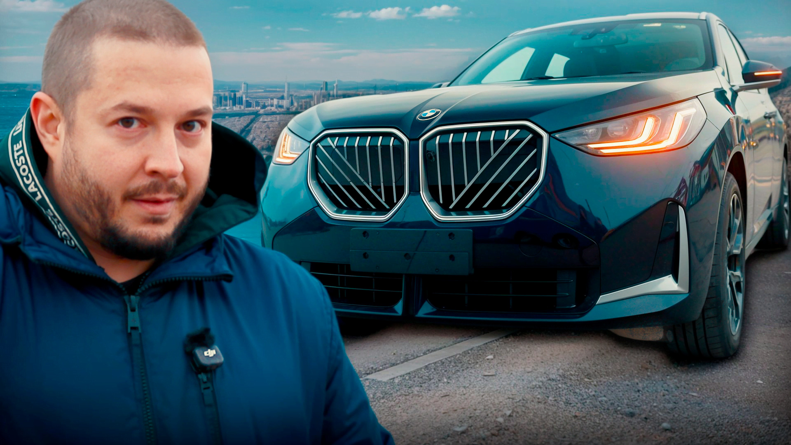
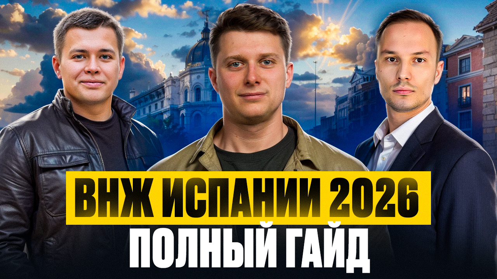
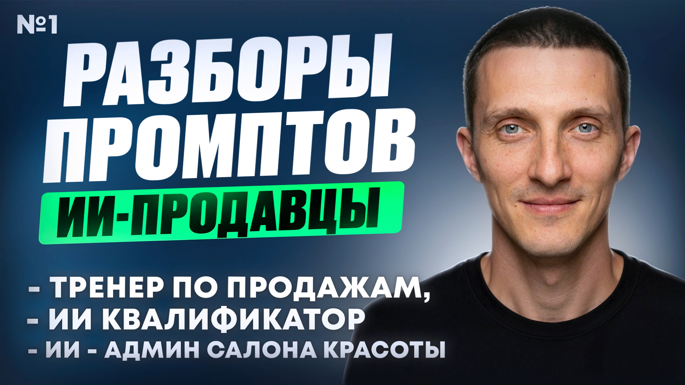

Продюсер YouTube каналов • Опыт с 2022 года

Обзоры и импорт автомасел
Просмотры и отклики с канала выросли в 20+ раз сразу после начала моей работы.
🏆 Результат: стабильный поток клиентов через YouTube.

Подбор и отправка авто с Азии
Полностью переупаковала канал. Внедрила систему контент-планов и рубрики.
🏆 Результат: органический рост подписчиков +150% за 3 месяца.

Помощь в получении ВНЖ Испании
Разработала визуальный стиль и стратегию продвижения.
🏆 Результат: первые 800 подписчиков без рекламы.

Канал основателя IT-компаний с острыми вопросами по бизнесу
Продюсирую подкасты: от поиска гостей до публикации и продвижения.
🏆 Результат: выпуски стабильно набирают 2к+ просмотров.